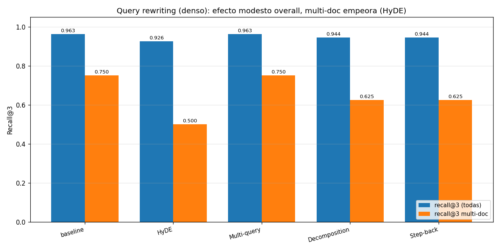

05 — Query rewriting: HyDE, multi-query, decomposition, step-back¶
Cambiar la query, no el corpus¶
Las secciones 1-4 atacaron el problema desde el lado del corpus: cómo indexarlo (BM25 vs denso vs híbrido) y cómo cortarlo (chunking). Esta sección ataca el otro extremo: la query. La idea es simple: si la pregunta del usuario y el texto de la norma viven en vocabularios distintos, en lugar de intentar que el retriever cierre la brecha solo, reescribimos la query con un LLM para que se parezca más a lo que hay que recuperar.
Las cuatro técnicas que cubrimos —HyDE, multi-query, decomposition, step-back— representan estrategias distintas de reescritura:
- HyDE (Gao et al., 2022): genera el documento que respondería la query.
- Multi-query: genera varias paráfrasis de la query y fusiona los resultados.
- Decomposition: parte una query compuesta en sub-preguntas.
- Step-back (Zheng et al., 2023): formula una pregunta más abstracta para anclar contexto.
Todas comparten una promesa y un costo: una llamada extra al LLM por query antes del retrieval. La pregunta empírica es si esa llamada vale lo que cuesta. Sobre el corpus chileno, la respuesta corta es: mucho menos de lo que la literatura sugiere, y a veces nada.
Cómo opera cada estrategia¶
graph LR
Q["Query original"]
Q --> HY["HyDE<br/>LLM → 1 doc hipotético"]
Q --> MQ["Multi-query<br/>LLM → N paráfrasis"]
Q --> DE["Decomposition<br/>LLM → N sub-preguntas"]
Q --> SB["Step-back<br/>LLM → 1 pregunta más general"]
HY -->|"buscar"| R["Retriever<br/>(dense / hybrid)"]
MQ -->|"buscar cada una"| R
DE -->|"buscar cada una"| R
SB -->|"buscar ambas"| R
R -->|"fusión RRF<br/>(si N > 1)"| O["Top-k"]Implementación en retrieval_lib.LLMRewriter: las cuatro estrategias son
prompts distintos al mismo modelo (gpt-4o-mini en estos experimentos), con
caché en disco de cada respuesta. La primera corrida cuesta 4 llamadas LLM
por query del golden; las siguientes son gratis y reproducibles sin API key.
Qué genera cada estrategia (texto real, no inventado)¶
Query: "¿Qué obligación trimestral comparten los prestadores de servicios digitales extranjeros y el Ministerio de Salud respecto a inmunizaciones?" (es una multi-hop, cruza la circular de IVA digital y la glosa de Salud).
HyDE (un párrafo en estilo jurídico):
"Los prestadores de servicios digitales extranjeros que operen en el territorio nacional deberán remitir trimestralmente al Ministerio de Salud un informe detallado sobre las transacciones realizadas que involucren la prestación de…"
Decomposition (4 sub-preguntas):
- ¿Qué obligación trimestral tienen los prestadores de servicios digitales extranjeros en Chile?
- ¿Cuál es la normativa que regula las obligaciones de los prestadores de servicios digitales extranjeros en relación a la salud?
- ¿Qué obligaciones tiene el Ministerio de Salud en relación a las inmunizaciones?
- ¿Cómo se relacionan las obligaciones de los prestadores de servicios digitales extranjeros con las del Ministerio de Salud respecto a inmunizaciones?
Step-back (una pregunta abstracta):
"¿Cuáles son las responsabilidades y obligaciones de los actores en el ámbito de la salud pública en relación con la regulación de servicios digitales?"
Multi-query (4 paráfrasis):
- ¿Cuál es la responsabilidad trimestral que tienen en común los proveedores de servicios digitales foráneos y el Ministerio de Salud en relación a las inmunizaciones?
- ¿Qué deber trimestral comparten los prestadores de servicios digitales internacionales y el Ministerio de Salud en cuanto a las vacunas?
- …
La trampa del HyDE: alucinación normativa¶
Query: "valor de la UTM en septiembre de 2024". El HyDE generó:
"El valor de la Unidad Tributaria Mensual (UTM) correspondiente al mes de septiembre del año 2024 será determinado por el Servicio de Impuestos Internos, conforme a lo establecido en el artículo 1° de la Ley N° 18.356…"
La Ley 18.356 no existe en nuestro corpus y la referencia es fabricada. Esto es lo más peligroso de HyDE en dominio jurídico-fiscal: el documento hipotético puede inventar normas, montos y plazos con apariencia plausible. Si el sistema luego cita ese contexto en la respuesta, tienes una alucinación de norma. Aquí no nos quema porque el embedding del párrafo aún sirve para recuperar la tabla correcta, pero el riesgo de citar la referencia falsa es real. Se conecta con §12 de 01-evals (dominios alto-stake).
Los números, sobre el golden¶
Recall@k sobre las 25 queries con fuente, dense retriever (mismo de §2):
| Estrategia | @1 | @3 | @5 |
|---|---|---|---|
| baseline (sin rewriting) | 0.796 | 0.963 | 0.963 |
| HyDE | 0.907 | 0.926 | 0.981 |
| Multi-query (n=4) | 0.833 | 0.963 | 0.981 |
| Decomposition | 0.833 | 0.944 | 0.963 |
| Step-back | 0.722 | 0.944 | 0.944 |
Y, lo más revelador, recall@3 desagregado por tipo de query:
| Estrategia | factual | numérico | entidad | multi-doc |
|---|---|---|---|---|
| baseline | 1.000 | 1.000 | 1.000 | 0.750 |
| HyDE | 1.000 | 1.000 | 1.000 | 0.500 |
| Multi-query | 1.000 | 1.000 | 1.000 | 0.750 |
| Decomposition | 1.000 | 1.000 | 1.000 | 0.625 |
| Step-back | 1.000 | 1.000 | 1.000 | 0.625 |

Tres lecturas honestas, ninguna en línea con el relato típico de "agrega rewriting y el RAG mejora":
- HyDE sube recall@1 de 0.796 a 0.907 — un salto real de 11 puntos. El párrafo hipotético cierra la brecha de vocabulario y pone el doc correcto en el puesto 1 con más frecuencia. Esa es la promesa cumplida. Sube @5 también a 0.981 (tope de todo el repo, empatado con RRF de §3).
- HyDE BAJA recall@3 (0.963 → 0.926) y BAJA recall@3 en multi-doc (0.750 → 0.500). El doc hipotético es muy específico; cuando la query verdaderamente exige varios docs, HyDE se concentra en uno y descarta los otros. Es justo el caso contrario al que esperabas que ayudara.
- Decomposition no rescata multi-doc (0.750 → 0.625). En teoría debería brillar aquí: las 4 sub-preguntas que generó arriba se ven razonables. En la práctica, sus sub-preguntas se concentran en aspectos semánticamente cercanos al primer doc relevante y no pescan el segundo. El LLM no conoce tu corpus; descompone en ejes plausibles, no necesariamente en los ejes correctos.
Step-back es la única estrategia que empeora todo (recall@1: 0.796 → 0.722). La pregunta más abstracta atrae docs temáticamente relacionados pero no relevantes — exactamente el ruido que el retriever original filtraba.
Multi-query es la más segura: empata baseline en @3, mejora @5 a 0.981, no hiere nada. Si vas a hacer rewriting "por si acaso", esta es la opción de menor riesgo.
La conclusión, honestamente¶
Sobre este corpus (16 docs, 25 queries), el cuadro completo es:
- Tres tipos de query (factual, numérico, entidad) ya están en techo 1.000 para todas las estrategias. El rewriting no puede mejorar lo que ya está perfecto.
- En el único estrato con margen (multi-doc, baseline 0.750), ninguna técnica de rewriting mejora; tres lo empeoran.
- Donde el rewriting paga es en recall@1 con HyDE (0.796 → 0.907) y recall@5 con HyDE o multi-query (0.963 → 0.981).
- El costo: una llamada LLM por query (más latencia, más dependencia, más posibilidad de alucinación). En el dominio regulatorio chileno, el riesgo de HyDE inventando una "Ley N° 18.356" es no trivial.
Esto contradice mucha literatura de demos. Por qué pasa aquí:
- Las queries del golden ya están bien escritas (yo o tú las redactamos); no son las queries "sucias" del usuario final donde rewriting brilla.
- El corpus es chico y los retrievers ya están cerca de techo en la mayoría de tipos; el margen es pequeño.
- Multi-doc en español jurídico es difícil porque el LLM no sabe los nombres específicos (numero de partida, glosa, nº de circular) que el retriever necesita para fusionar correctamente. El LLM compone semánticamente bien y léxicamente mal.
Cuándo paga query rewriting¶
| Situación | Recomendación |
|---|---|
| Queries cortas y telegráficas del usuario ("UTM septiembre") | HyDE o multi-query — cierran la brecha de vocabulario |
| Queries compuestas claras ("compara A con B") | Decomposition, pero verifica que las sub-preguntas matcheen tus docs |
| Queries muy específicas con jerga de dominio | Multi-query (paráfrasis) si la jerga del usuario difiere de la del corpus |
| Queries abstractas / conceptuales | Step-back (raro útil) |
| Corpus dominado por referencias exactas (leyes, montos) | Nada de HyDE — inventa referencias |
| Latencia crítica | Ninguna: agregás >1s al pipeline |
Estado del arte¶
| Aspecto | Estado | Detalle |
|---|---|---|
| HyDE para zero-shot retrieval | ✅ Probado | Útil cuando no hay datos para fine-tunear embeddings de dominio |
| Multi-query / RAG-fusion | ✅ Patrón estable | Robusto, suele ser un net positive modesto |
| Decomposition para multi-hop | 🟡 Variable | Mejora si el LLM conoce los ejes del corpus; aquí no fue el caso |
| Step-back | 🟡 Nicho | Útil en QA conceptual; daña QA factual |
| Riesgo de alucinación en HyDE | 🔴 Activo | Sin solución estándar para dominios alto-stake; mitigar con verificación posterior |
| Rewriting + cita verificada | 🟡 Práctica emergente | Combinar HyDE con un paso de chequeo de citas (ver §9 y 01-evals §12) |
Conexiones¶
- Sección 2 (denso): el rewriting actúa sobre el lado de la query lo que los embeddings densos hacen sobre el documento — ambos cierran la brecha de vocabulario, desde extremos opuestos.
- Sección 3 (hybrid): el patrón completo en producción combina las dos: reescribir la query (multi-query) Y fusionar BM25 + denso (RRF). No lo ejecutamos aquí para no inflar la sección, pero la mecánica es directa.
- Sección 6 (reranking): el rewriting amplía el pool de candidatos (rescata @5); el reranker arregla su orden. Son complementarios, no sustitutos.
- Sección 9 (casos límite): la alucinación de HyDE ("Ley N° 18.356") es exactamente el tipo de falla normativa que el dominio regulatorio no perdona. Conectada con 01-evals §12.